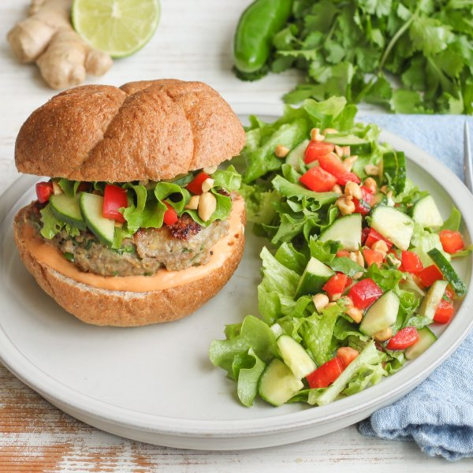

Thai Turkey Burger with Cucumber-Lettuce Salad, Spicy Mayo & Peanuts

Total Time
35 min
Nutrition (Per Serving)
698.7 kcalCalories
45 gProtein
38 gCarbs
42.5 gFat
Full nutrition table
| Calories | 698.7 kcal |
| Total fat | 42.5 g |
| Saturated fat | 8.1 g |
| Trans fat | 0.6 g |
| Cholesterol | 131.1 mg |
| Sodium | 473.5 mg |
| Carbohydrates | 38 g |
| Fiber | 7 g |
| Sugars | 12.9 g |
| Protein | 45 g |
| Potassium | 1061.6 mg |
| Calcium | 149.3 mg |
| Iron | 4.9 mg |
| Vitamin A | 226.3 IU |
| Vitamin C | 57.9 mg |
| Vitamin D | 26.6 IU |
Cookware
Ingredients
- 1 headbutter (Boston) lettuce
- 1 small bunchcilantro
- 1English cucumber
- 2 (1 inch) piecesginger root
- 1 ½ lbground turkey
- 1jalapeño pepper
- 1lime
- ¼ cuppeanuts, roasted unsalted
- 1red bell pepper
- 1shallot
- 4whole grain buns or rolls
- black pepper
- extra virgin olive oil
- fish sauce
- garlic powder
- honey
- hot sauce
- mayonnaise
- panko bread crumbs
- salt
Steps
- Wash and dry the fresh produce.1 small bunch cilantro
2 (1 inch) pieces ginger root
1 jalapeño pepper
1 lime
1 red bell pepper
1 English cucumber
1 head butter (Boston) lettuce - Shave cilantro leaves off the stems; discard stems and mince the leaves. Divide between two medium bowls. (Set one bowl aside for the salad.)
- Peel and mince ginger and shallot. Add both to the remaining bowl with the cilantro.1 shallot
- Quarter jalapeño pepper lengthwise; seed and remove ribs with a spoon to reduce spice level. Mince and add to the bowl. (Be careful with jalapeños; do not touch your eyes and ensure you wash your hands after handling or wear gloves while preparing.)
- Add turkey, bread crumbs, and fish sauce to the bowl, then mix with your hands until well combined. Form the turkey mixture into 4 equal-sized patties and place on a plate.1 ½ lb ground turkey
⅓ cup panko bread crumbs
2 tbsp fish sauce - Preheat a grill pan, outdoor grill, or regular skillet over medium-high heat.
- Once the pan is hot, coat with oil. Add burger patties and cook, undisturbed, for 5 minutes; flip patties and cook an additional 5-7 minutes, until cooked through. Once done, transfer to a clean plate.2 tsp extra virgin olive oil
- Meanwhile, juice lime into the reserved bowl with the cilantro. Add oil, honey, and spices, then whisk to combine the dressing.1 tbsp extra virgin olive oil
2 tsp honey
1 tsp garlic powder
¼ tsp salt
¼ tsp black pepper - Trim, seed, and small dice bell pepper. Add to the bowl with the dressing.
- Trim and quarter cucumber lengthwise, then cut crosswise into bite-sized pieces. Add to the bowl.
- Chop (or tear) lettuce into bite-sized pieces. Add to the bowl.
- Roughly chop peanuts. Add to the bowl, toss to combine the salad, and set aside.¼ cup peanuts, roasted unsalted
- Place mayo and hot sauce in a small bowl. Stir to combine the spicy mayo.⅓ cup mayonnaise
2 tsp hot sauce - Toast the buns if desired.4 whole grain buns or rolls
- Spread spicy mayo over the bottom half of each bun; top with burger patties and a small handful of salad. Close with the top half of each bun. Serve with remaining salad on the side and enjoy!